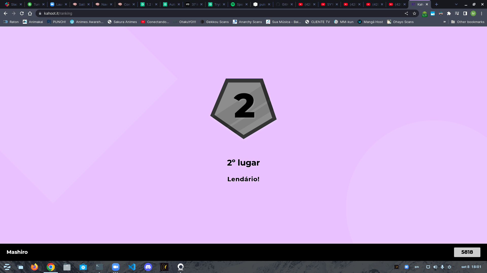

Exercícios
Lista de amigos Trybers
- Tiago TK - Turma 27 - Tribo B
- Amanda Zanata - Turma 27 - Tribo B
- Elitonn Rosa - Turma 27 - Tribo B
- Heitor José - Turma 27 - Tribo B
- José Alves - Turma 27 - Tribo B
- Adriana Chikuji - Turma 27 - Tribo B
- Rodrigo Lima - Turma 27 - Tribo B
- Stefano Malaussena - Turma 27 - Tribo B
- João Benício - Turma 27 - Tribo A
- Lucas Silva - Turma 27 - Tribo A


Acessar o Google!